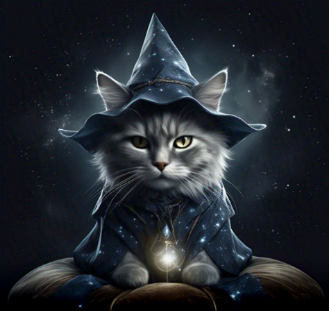

Los hechiceros te entregan un frasco con un líquido dorado. La poción te volverá invisible por exactamente 5 minutos.
"Es poderosa, pero el efecto se desvanece rápido. Además… tiene un pequeño defecto: si la tomas en el momento equivocado, podrías quedarte atrapado entre dimensiones desaparecido."
